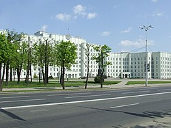
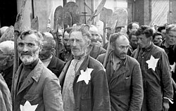
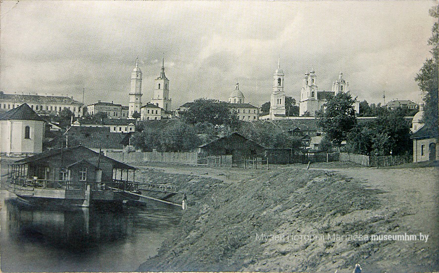

После Февральской революции 1917 года в Могилёве был создан Могилёвский белорусский комитет (Могилёвский Белорусский Организационный Комитет, Могилёвский Белорусский Совет, март 1917 — осень 1918). Редактор газеты «Могилёвский вестник» М. Коханович был одним из организаторов МБК, в последующем стал его председателем. В Могилёве работали все Верховные Главнокомандующие, находившиеся на посту после Февральской революции — М. Алексеев, А. Брусилов, Л. Корнилов. 1 (14) сентября 1917 года в Могилёве именем Временного правительства был арестован генерал от инфантерии Корнилов. Он 12 дней содержался под арестом в гостинице «Бристоль», прежде чем был отправлен в Быхов. 20 ноября (3 декабря) 1917 года на перроне могилёвского вокзала был убит солдатами и матросами последний Верховный Главнокомандующий Русской армией — Н. Духонин.

В 1918 году Могилёв был оккупирован польскими легионерами, затем немецкими войсками, в том же году, во время немецкой оккупации была провозглашена белорусскими социалистами Белорусская Народная Республика, которая, однако, не смогла противостоять силам Красной армии. 1 января 1919 года согласно постановлению I съезда Коммунистической партии Белоруссии Могилёв вошёл в состав БССР, но 16 января по решению центральных органов коммунистической партии большевиков город был передан в состав РСФСР. В 1924 году Могилёв был передан БССР, где стал центром округа и района (с 1938 года — центром Могилёвской области). В 1938 году в связи с проектом переноса столицы БССР в Могилёв началась реконструкция города. Были построены Дом Советов, кинотеатр «Родина», здание НКВД БССР (сейчас — Белорусско-Российский университет), гостиница, ряд многоэтажных жилых домов. Значительные ассигнования выделялись на обустройство города, образование, здравоохранение. В короткий срок разрабатывается генеральный план города. Но в результате присоединения к БССР Западной Белоруссии идея переноса столицы из Минска в Могилёв отпала. После освобождения БССР от немецких оккупантов, поскольку Минск был практически полностью разрушен, Могилёв снова рассматривался как возможная столица БССР, но так и не получил этот статус. В июле — августе 1940 года в городе была сформирована 161-я стрелковая дивизия.

22 июня 1941 года Германия напала на Советский Союз. Началась Великая Отечественная война. Уже в конце июня 1941 года германские войска были в районе Могилёва. Семнадцать дней, с 4 по 21 июля, шли бои на всех направлениях в предместьях города. Особенно тяжёлые бои разворачивались в посёлке Буйничи. Однако перед превосходящими силами вермахта, которые составляли: 4 пехотные дивизии, 3-я танковая дивизия, часть сил 10-й моторизованной дивизии и моторизованной дивизии СС «Рейх», полк «Великая Германия», советские войска вынуждены были отступить. 26 июля 1941 года немцы захватили Могилёв, под стенами которого они понесли существенные потери. При допросе пленного немецкого штабного офицера выяснили, что участвовавшие в боях под городом соединения вермахта потеряли 30-35 % личного состава, 45-50 % танков, самоходок и бронетранспортёров, большое количество орудий, пулемётов и другого оружия. Оборона Могилёва с 4 по 26 июля 1941 года позволила задержать продвижение немецких войск на восток. В память о кровопролитных сражениях в посёлке Буйничи открыт мемориальный комплекс героическим защитникам города Могилёва «Буйничское поле». В память о героических защитниках города возле деревни Гаи возведён мемориальный комплекс «Памятник батальону милиции под командованием капитана К. Владимирова». Захватив Могилёв, гитлеровцы установили жестокий оккупационный режим, создали несколько концентрационных лагерей, в том числе Гребенёвский и Луполовский лагеря смерти, 341-й пересыльный лагерь для советских военнопленных. В годы войны в Могилёве и окрестностях погибло более 70 тыс. советских граждан, около 30 тыс. могилёвчан вывезено на принудительные работы в Германию[13]. В соответствии с переписью населения 1939 года, в Могилёве насчитывалось 19 715 евреев — 19,83 % от общего числа жителей[14]. Большей частью они были согнаны нацистами в Могилёвское гетто и к 1943 году убиты — примерно 12 тыс. человек. Синагоги города были закрыты, из более чем трёх десятков сохранилось лишь три здания: Хоральная, Купеческая Любавичи[15]. Освобождён Красной армией 28 июня 1944 года.

В 1918 году создан городской отдел народного образования, который приступил к осуществлению широкой программы по народному образованию. Для введения всеобщего обучения была проведена перепись детей школьного возраста, создана единая советская школа с 2 ступенями: 1-я — для детей с 8 до 13 лет (5-летний курс обучения) и 2-я — для детей с 13 до 17 лет (4-летний курс обучения). Обучение стало бесплатным. В 1920 году в городе было 49 школ 1-й ступени и 22 — 2-й, 43 детских дошкольных учреждения. В 1918 на базе учительского института основан педагогический институт (с 1937 при нём существовал учительский институт), в 1919 году — политехникум имени Коммунаров, в 1928 году — культурно-просветительное училище, в 1930 году — архитектурно-строительный техникум имени Н. К. Крупской[64], в 1933 году — педагогическое училище, в 1937 году — музыкальное училище. В 1932—1936 годах действовал Могилёвский политико-просветительный институт. В предвоенные годы в городе было 22 школы, в которых обучалось 15 тыс. детей, 2 института, 6 средних специальных учебных заведений. Во время Великой Отечественной войны народному образованию города нанесён огромный ущерб. Но уже к концу 1945 года в Могилёве восстановлено 12 общеобразовательных школ, за парты сели 7,2 тыс. детей. В первые послевоенные годы работали педагогический и учительский институты, 3 строительные школы, 2 ремесленных училища, 2 училища механизации сельского хозяйства. В 1945 году вновь открыт строительный техникум, в 1947 году — политехнический техникум. К 1953 году осуществлён переход ко всеобщему среднему образованию.